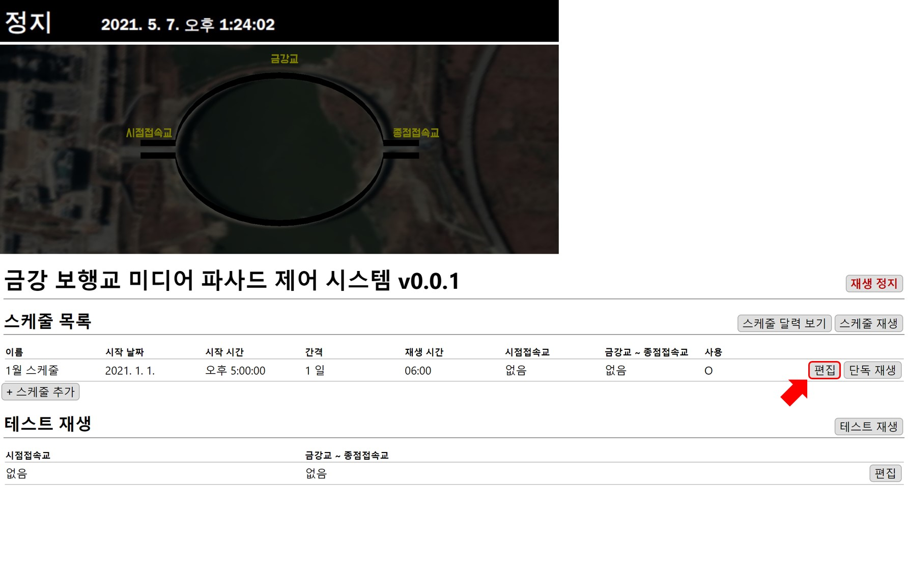
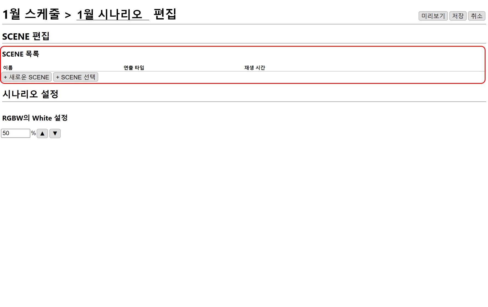
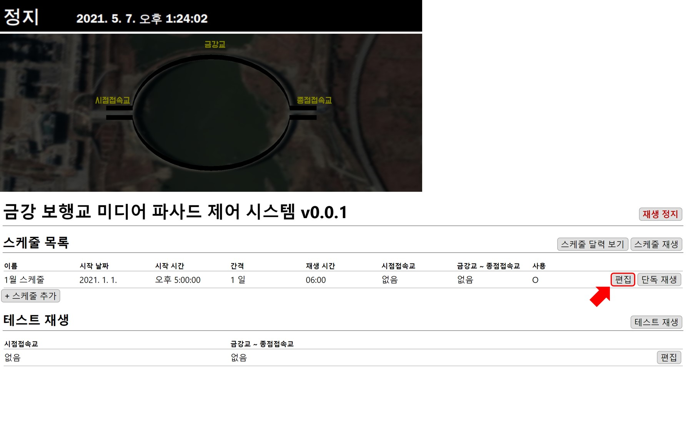
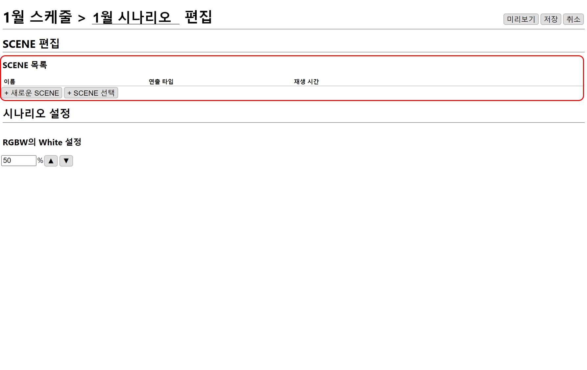

시점접속교 시나리오 추가
스케줄에 새로운 시나리오를 추가하겠습니다.
스케줄 만들기 에서 만들어진 1월 스케줄의 편집 버튼을 누릅니다.

시나리오 만들기
시점접속교에 새로운 시나리오를 추가합니다.

SCENE 추가
새로 만들 시나리오에 이미지 흐름과 색상 흐름 SCENE을 만들어 추가하도록 하겠습니다.

스케줄에 새로운 시나리오를 추가하겠습니다.
스케줄 만들기 에서 만들어진 1월 스케줄의 편집 버튼을 누릅니다.

시점접속교에 새로운 시나리오를 추가합니다.
새로 만들 시나리오에 이미지 흐름과 색상 흐름 SCENE을 만들어 추가하도록 하겠습니다.
